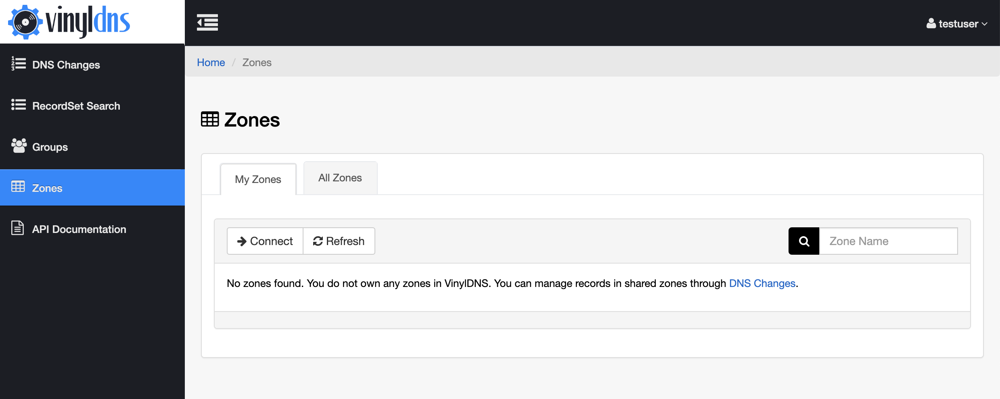

Connect to your Zone
Once your zone is setup for use with VinylDNS, you can use the VinylDNS portal to connect to it.
- If you don’t already have an admin group in VinylDNS for your zone select the Groups link in the navigation and create an admin group for your zone. Members of the group will have full access to the zone. See Manage Access for more details.
- Select the Zones link from the navigation, then click the Connect button. This will show the Connect to a Zone
form. 

- Enter the full name of the zone, example “test.sys.example.com”
- Enter the email distribution list for the zone. This is typically a distribution list email for the team that owns the zone.
- Select the admin group for the zone.
- If you do not have any custom TSIG keys, you can leave the connection information empty.
- If you do have custom TSIG keys, read the section on Understand Connections.
- Click the Connect button at the bottom of the form.
- You may have to click the Refresh button from the zone list to see your new zone.

- If you see error messages, please consult the FAQ.
{kind=link}